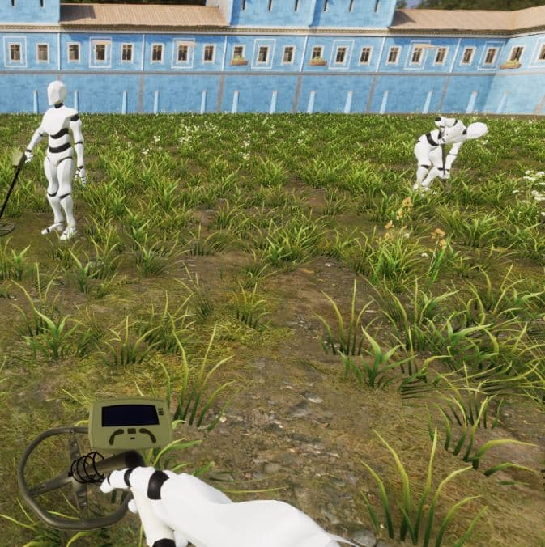

Collective Foraging
A mechanistic model to study social information use and the impact of perceptive and physical constraints in collective foraging.
 We developed a mathematical model and implemented it in an agent-based simulation
framework using pygame. Each agent can perceive other agents through vision and can
detect and exploit resource patches in the environment. With this framework we were
able to study optimal social information use in different types of environments.
When resource patches are difficult to find and contain many resource untis to be
exploited it is beneficial to use social information and join others. If patches are
distributed through the environment and contain only little resource units it is
more beneficial to explore the environment alone.
We developed a mathematical model and implemented it in an agent-based simulation
framework using pygame. Each agent can perceive other agents through vision and can
detect and exploit resource patches in the environment. With this framework we were
able to study optimal social information use in different types of environments.
When resource patches are difficult to find and contain many resource untis to be
exploited it is beneficial to use social information and join others. If patches are
distributed through the environment and contain only little resource units it is
more beneficial to explore the environment alone.
 Agents in this framework only use locally available sensory information and
make dicision to (1) explore the environment, (2) exploit a resource patch or (3) join other agents
accordingly. Hence, we are able to study how limiting the agents' perception affect the
performance of the group. We found that limiting agents' visual field of view is sometimes
beneficial and can remedy overherding of highly social groups. We also studied how physical
collisions deteriorating the group performance through physically limiting agents to fit on
and exploit the same resource patch. Our findings emphasize the fundamental impacts of sensory
and physical constraints on collective behavior.
Agents in this framework only use locally available sensory information and
make dicision to (1) explore the environment, (2) exploit a resource patch or (3) join other agents
accordingly. Hence, we are able to study how limiting the agents' perception affect the
performance of the group. We found that limiting agents' visual field of view is sometimes
beneficial and can remedy overherding of highly social groups. We also studied how physical
collisions deteriorating the group performance through physically limiting agents to fit on
and exploit the same resource patch. Our findings emphasize the fundamental impacts of sensory
and physical constraints on collective behavior.
For more information see our recent manuscript here:
David Mezey, Dominik Deffner, Ralf HJM Kurvers, Pawel Romanczuk
Visual social information use in collective foraging
bioRxiv 2023.11.30.569379; doi: https://doi.org/10.1101/2023.11.30.569379
- GitHub Find the Code on GitHub
 We also study human collective foraging in comparable environments at the same time. To do so, we designed an immersive reality where participants search for and collect hidden coins together. Having comparable paradigms will help us in the future to shed light on basic differences in human search and social information use strategies compared to simpler mechanistic agents.
For more information see our recent manuscript here:
Deffner, Dominik, David Mezey, Benjamin Kahl, Alexander Schakowski, Pawel Romanczuk, Charley M. Wu, and Ralf Kurvers.
Collective Incentives Reduce Over-exploitation of Social Information in Unconstrained Human Groups.
PsyArXiv. August 23. 2023 doi:10.31234/osf.io/p3bj7
- GitHub Find the Code on GitHub (by Dominik Deffner)